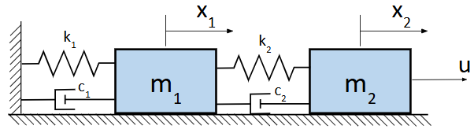
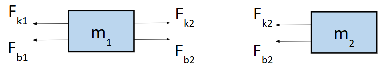

State-space representation#
So far, we have been concerned with SISO systems, systems with single input and single output. What if there were multiple inputs that could influence the system and multiple outputs we are interested in keeping track of? Well first, we need to have some way to represent all the inputs and outputs in a concise manner and also describe how these quantities interact with each other.
Motivation#
First, let us consider a more complicated mechanical system: two masses connected by parallel springs and dampers with an external forcing \(u\).

We define the origin of \(x_{1}\) and \(x_{2}\) as the positions of the masses when the springs are in their unforced states. We can draw the FBDs for both masses assuming no friction with the surface (we can thus leave out vertical forces).

The equation of motion of the first mass \(m_{1}\):
The equation of motion of the second mass \(m_{2}\):
Applying the Laplace transform to the above equations of motion with zero initial conditions:
We can substitute one of the above equations into the other to solve for \(\dfrac{X_{1}}{U}\) and \(\dfrac{X_{2}}{U}\).
How scalable is the above strategy for more complicated systems? For example, suppose we had 100 mass-spring dampers connected in parallel. Imagine going though the algebra like the one above 100 times! Is there another way to analyze linear systems with many components?
Yes there is! We do this by essentially stacking all the variables into a vector \(\mathbf{x} = [x_1, \ldots, x_n]^T\). We will refer to this vector as the state vector, which represents the minimal set of variables necessary to describe the system. Now that the variables are written as a vector, we can also similarly consider the first and second derivative of the state vector, \(\dot{\mathbf{x}} = [\dot{x}_1, \ldots, \dot{x}_n]^T\) and \(\ddot{\mathbf{x}} = [\ddot{x}_1, \ldots, \ddot{x}_n]^T\). In doing so, we can now combine the two equations of motion into a single matrix-vector equation.
Let’s start by rewriting the two equations in matrix form:
Hmmmm, so it appears that the two equations of motion that were derived could actually be combined together to be written in a somewhat compact and simple form.
Try writing out the equation of motion for a chain of 3 and 4 MSD systems. Do you notice a patter forming? What would the equation for a 100-chain MSD system look like?
State-space dynamics#
Recall from Chapter 1 when we introduced the notion of state as a minimal list of quantities that fully describes a dynamical system. How the state changes over time is described by a first-order ordinary differential equation \(\dot{\mathbf{x}} = f(\mathbf{x}, \mathbf{u})\) where \(f\) is vector-valued function which takes in state and control as inputs, and the control \(\mathbf{u}\) is an external input into the system whose value can be chosen by, for example, a human or algorithm. While the dynamics function \(f\) can be generally complex and nonlinear, in this course, we are restricting our analysis to LTI systems as this class of system exhibits nice properties that make analysis and control synthesis tractable. Thus we define LTI state space dynamics, which can be viewed as a generalized representation to many of the MSD systems we have seen so far.
Definition (LTI state space dynamics)
The state-space representation for a linear time-invariant dynamical system is given by
where \(x \in \mathbb{R}^{n}\) is the state of the system, \(u \in \mathbb{R}^{m}\) is the system input, and \(y \in \mathbb{R}^{p}\) is the system output.
\(A \in \mathbb{R}^{n \times n}\) is known as the system matrix (which governs the system’s passive dynamics)
\(B \in \mathbb{R}^{n \times m}\) is known as the control matrix (which governs the system dynamics with respect to the control input)
\(C \in \mathbb{R}^{p \times n}\) is known as the output matrix (which governs the relationship between the state and the measured output)
\(D \in \mathbb{R}^{p \times m}\) is known as the feedthrough matrix (which governs the relationship between the input and output; often this is 0)
We will now show how to obtain the solution for the state \(\mathbf{x}\) from a first-principles approach. Once you understand how this solution is obtained, you can use it moving forward.
Taking the Laplace transform of both sides, we obtain:
Rearrange the first equation:
In the above, the first term is the response due to input and the second term is the response due to initial conditions.
Substituting \(X(s)\) into the output equation:
Definition (Inverse Laplace of \((sI - A)^{-1}\))
As such, taking the inverse Laplace transform, we have,
What have we shown? For any state space dynamics, the state (and output) at any time can be determined by the above equations which require knowledge of the system matrices, initial state, and control signal.
Converting n-order systems into a first-order system#
Notice that the state space dynamics are given as a first-order ODE. However, when are are deriving the equation of motion, we result in a second-order ODE. So how do we convert our second-order ODEs into state space dynamics? We do this via state augmentation. Note that for LTI systems, the ODE is of the form \(a_nx^{(n)}(t) + a_{n-1}x^{(n-1)}(t) + \ldots a_1x^\prime(t) + a_0x(t) = 0\). This means that \(x^{(n)}(t)\) term is a linear combination of all the lower order terms. As such, we redefine our state to also include all the derivative terms up until the \(n-1\) derivative. In the case of the second order system we considered at the start of this chapter, we redefine the state,
With this new state representation, considering the \(C\), \(K\), and \(B\) matrices defined in (), we can rewrite the dynamics as